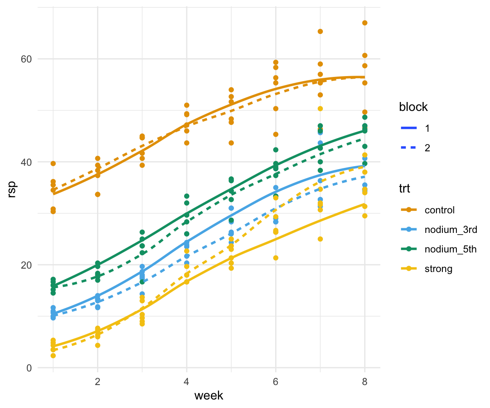

pacman::p_load(tidyverse, magrittr, readxl, see, janitor,
lme4, performance, emmeans, multcomp,
conflicted)
## resolve some conflicts with same function naming
conflict_prefer("select", "dplyr")
conflict_prefer("filter", "dplyr")9 Auswertung mit Messwiederholungen
Wir wollen folgende R Pakete in diesem Kapitel nutzen.
In diesem Abschnitt wollen wir ein multiples lineares Gaussion gemischtes Modell rechnen. Das heißt, wir wollen die Messwiederholungen über die Wochen mit in unser Modell als einen zufälligen Effekt aufnehmen. Dafür brauchen wir wieder unsere Daten zu dem Rückschnitt. Wir nehmen aber hier nur die Trieblänge als normalverteiltes Outcome. Dann wollen wir herausfinden, ob die drei Arten des Rückschnitts und die Kontrolle einen Einfluss auf die Trieblänge haben.
cutting_raw_tbl <- read_excel("data/cutting_data.xlsx") %>%
clean_names()Wir in Kapitel 6 müssen wir die Daten wieder von dem Wide-Format in das Long-Format umwandeln. Wir wollen aber vorher nur die Spalten wähen die shoot in dem Spaltennamen haben. Diese Auswahl können wir über die Funktion matches() erreichen. Dann können wir die Funktion pivot_longer() nutzen um unseren Datensatz in dem Long_Format zu bauen.
cutting_tbl <- cutting_raw_tbl %>%
select(trt, block, matches("shoot")) %>%
pivot_longer(cols = shoot_1:last_col(),
names_to = c("outcome", "week"),
names_sep = "_",
values_to = "rsp") %>%
arrange(outcome, week, trt, block, rsp) %>%
mutate(block = as_factor(block),
trt = as_factor(trt),
outcome = as_factor(outcome),
week = as.numeric(week))Schauen wir uns in der Abbildung 9.1 nochmal die Daten an. Wir haben einen Effekt zwischen den Behandlungen an jedem Messtermin. Die Pflanzen an den jeweiligen Messterminen sind aber nicht unabhängig voneinander. Wir messen ja immer wieder die gleiche Pflanze. So sind die Messtermine untereinander korreliert. Um diese Korrelation oder Abhängigkeit der Mestermine zu modellieren, nutzen wir lineare gemischte Modelle.
cutting_tbl %>%
ggplot(aes(week, rsp, color = trt, linetype = block)) +
theme_minimal() +
geom_point() +
stat_smooth(se = FALSE) +
scale_color_okabeito()
In R nutzen wir das Paket lme4 mit der Funktion lmer() um ein lineares gemisches Modell mit Normalverteilungsannahme zu fitten. Der vordere Teil des Modells ist gleich wie in einem normalen linearen Modell. Was sich hier ändert ist der zufällige Effekt, den wir durch (1|week) beschreiben. Unsere Wochen sind untereinander korreliert und deshalb wandert der Faktor Woche in den zufälligen Term.
lmer_fit <- lmer(rsp ~ trt + block + trt:block + (1|week),
data = cutting_tbl)Schauen wir einmal an, wie gut unser Modell funktioniert hat. Wieviel der Varianz kann denn unser Modell erklären? Wir nutzen dazu die Funktion r2() aus dem R Paket performance.
lmer_fit %>% r2# R2 for Mixed Models
Conditional R2: 0.940
Marginal R2: 0.470Das \(R^2_{conditional}\) ist der erklärte Anteil der Varianz von den festen und zufälligen Effekten zusammen. Das \(R^2_{marginal}\) ist der erklärte Anteil der Varianz von den festen Effekten alleine.
Das \(R^2_{conditional}\) ist der erklärte Anteil der Varianz von den festen und zufälligen Effekten zusammen. Da wir hier ein \(R^2\) von fast 95% haben, können wir mit unserem Modell fast die gesamte Variabilität in unserem Experiment erklären. Das ist selten zu beobachten, aber sehr schön. Das \(R^2_{marginal}\) ist der erklärte Anteil der Varianz von den festen Effekten alleine. Hier haben wir dann gut 50% erklärte Varianz. Damit wissen wir immerhin, dass gut die Hälfte der Variabilität in unseren Daten von unserer behandlung kommt, unabhängig von dem zufälligen Effekt.
Wir können dann noch den Intraclass Correlation Coefficient (abk. ICC) berechnen. Der ICC beschreibt den Anteil der Varianz, der durch die Gruppierungsstruktur in der Stichprobe erklärt wird. Wir können den Wert direkt aus der Summary des lmer Objektes berechnen.
lmer_fit %>% summary()Linear mixed model fit by REML ['lmerMod']
Formula: rsp ~ trt + block + trt:block + (1 | week)
Data: cutting_tbl
REML criterion at convergence: 1067.5
Scaled residuals:
Min 1Q Median 3Q Max
-3.5902 -0.5207 -0.0094 0.4956 4.6832
Random effects:
Groups Name Variance Std.Dev.
week (Intercept) 109.13 10.447
Residual 13.82 3.717
Number of obs: 192, groups: week, 8
Fixed effects:
Estimate Std. Error t value
(Intercept) 47.28472 3.77062 12.540
trtnodium_3rd -21.29861 1.07309 -19.848
trtnodium_5th -15.57639 1.07309 -14.515
trtstrong -29.03472 1.07309 -27.057
block2 -0.01403 1.07309 -0.013
trtnodium_3rd:block2 -2.19417 1.51758 -1.446
trtnodium_5th:block2 -1.57611 1.51758 -1.039
trtstrong:block2 2.97944 1.51758 1.963
Correlation of Fixed Effects:
(Intr) trtn_3 trtn_5 trtstr block2 tr_3:2 tr_5:2
trtnodm_3rd -0.142
trtnodm_5th -0.142 0.500
trtstrong -0.142 0.500 0.500
block2 -0.142 0.500 0.500 0.500
trtndm_3r:2 0.101 -0.707 -0.354 -0.354 -0.707
trtndm_5t:2 0.101 -0.354 -0.707 -0.354 -0.707 0.500
trtstrng:b2 0.101 -0.354 -0.354 -0.707 -0.707 0.500 0.500Dafür nehmen wir die Varianz der Gruppe week und teilen die Varianz durch die gesamte Varianz bestehend aus den Residuen plus der Varianz der Gruppe. Damit erfahren wir dann, dass in der zufälligen Effekten unsere Gruppe week fast 90% der Varianz erklärt. Was wiederum ein wirklich guter Wert ist.
\[ ICC = 109.134/(109.134 + 13.818) = 0.888 \]
Natürlich können wir das ICC auch direkt in R mit einer Funktion berechnen lassen. Wir nutzen nur den adjustierten ICC und ignorieren in diesem Fall den anderen Wert.
lmer_fit %>% icc# Intraclass Correlation Coefficient
Adjusted ICC: 0.888
Unadjusted ICC: 0.471Jetzt können wir noch flott die paarweisen Vergleiche rechnen, denn praktischerweose ändert sich hier nichts mehr. Wir können die den Fit aus unserem linearen gemischten Modell einfach in die Funktionalität von emmeans pipen und dann geht alles seinen normalen Gang.
emm_obj <- lmer_fit %>%
emmeans(specs = ~ trt) Wir machen auch hier wieder so weiter wie wir es schon gewöhnt sind. Einmal rechnen wir die paarweisen Vergleiche mit Bonferroni adjustierten \(p\)-Werten. Spannend ist jetzt, dass wir hier über alle Messzeitpunkte hinweg einen Unterschied zwischen allen Behandlungen sehen.
emm_obj %>%
contrast(method = "pairwise", adjust = "bonferroni") contrast estimate SE df t.ratio p.value
control - nodium_3rd 22.40 0.759 177 29.515 <.0001
control - nodium_5th 16.36 0.759 177 21.567 <.0001
control - strong 27.55 0.759 177 36.301 <.0001
nodium_3rd - nodium_5th -6.03 0.759 177 -7.949 <.0001
nodium_3rd - strong 5.15 0.759 177 6.786 <.0001
nodium_5th - strong 11.18 0.759 177 14.735 <.0001
Results are averaged over the levels of: block
Degrees-of-freedom method: kenward-roger
P value adjustment: bonferroni method for 6 tests Dann lassen wir uns noch das Compact letter display für die Trieblänge wiedergeben. Auch hier sehen wir, dass sich alle Behandlungen voneinander über alle Zeitpunkte hinweg voneinander unterscheiden. Das stimmt dann auch mit unserer Abbildung überein, die Geraden der Behandlungen laufen ja alle nebeneinander mit Abstand.
emm_obj %>%
cld(Letters = letters, adjust = "bonferroni") trt emmean SE df lower.CL upper.CL .group
strong 19.7 3.73 7.22 7.41 32.1 a
nodium_3rd 24.9 3.73 7.22 12.56 37.2 b
nodium_5th 30.9 3.73 7.22 18.59 43.2 c
control 47.3 3.73 7.22 34.95 59.6 d
Results are averaged over the levels of: block
Degrees-of-freedom method: kenward-roger
Confidence level used: 0.95
Conf-level adjustment: bonferroni method for 4 estimates
P value adjustment: bonferroni method for 6 tests
significance level used: alpha = 0.05
NOTE: If two or more means share the same grouping symbol,
then we cannot show them to be different.
But we also did not show them to be the same. Und dann nochmal der Vergleich zu der Kontrolle, falls das mehr gewünscht sein sollte. Auch hier sehen wir, dass alle Vergleiche zu der Kontrolle signifikant sind. Über alle Messzeitpunkte hinweg ist die Kontrolle immer Größer als die Pflanzen mit den Rückschnittbehandlungen.
emm_obj %>%
contrast(method = "trt.vs.ctrlk", ref = 1,
adjust = "bonferroni") contrast estimate SE df t.ratio p.value
nodium_3rd - control -22.4 0.759 177 -29.515 <.0001
nodium_5th - control -16.4 0.759 177 -21.567 <.0001
strong - control -27.5 0.759 177 -36.301 <.0001
Results are averaged over the levels of: block
Degrees-of-freedom method: kenward-roger
P value adjustment: bonferroni method for 3 tests